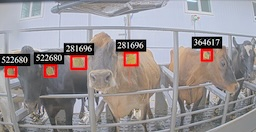
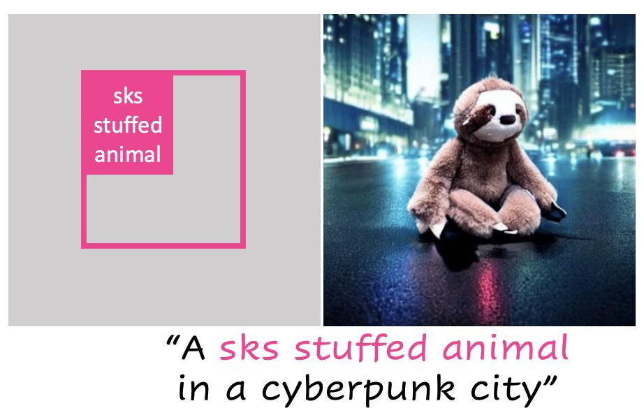
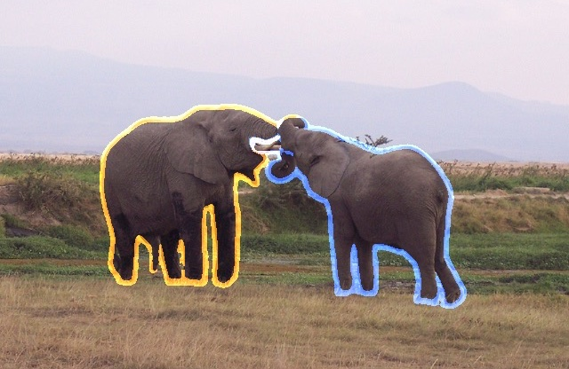
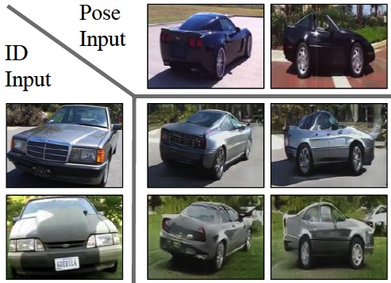

publications
2024
-
 Computer Vision on the Edge: Individual Cattle Identification in Real-Time With ReadMyCow SystemWACV, 2024
2023
- arXiv
- arXiv
- NeurIPSAn Empirical Study of Scaling Instruct-Tuned Large Multimodal ModelsNeurIPS, Workshop on Instruction Tuning and Instruction Following, 2023
- LLaVA-Med: Training a Large Language-and-Vision Assistant for Biomedicine in One DayNeurIPS, Datasets and Benchmarks Track, 2023 (Spotlight)
- arXiv
-

2022
-

2021
2019
-
 Identity from here, Pose from there: Self-supervised Disentanglement and Generation of Objects using Unlabeled VideosICCV, 2019
2018
- JCLPOperation strategy of public building: Implications from trade-off between carbon emission and occupant satisfactionJournal of Cleaner Production, 2018